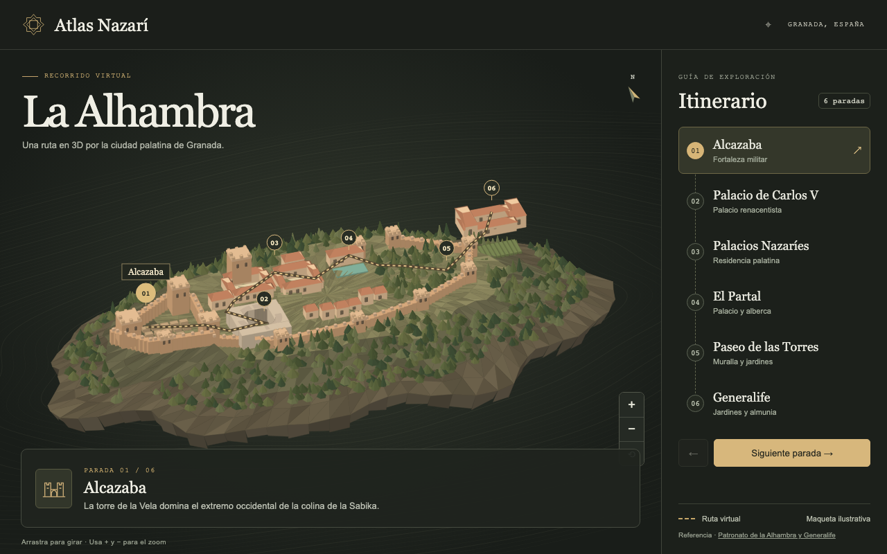
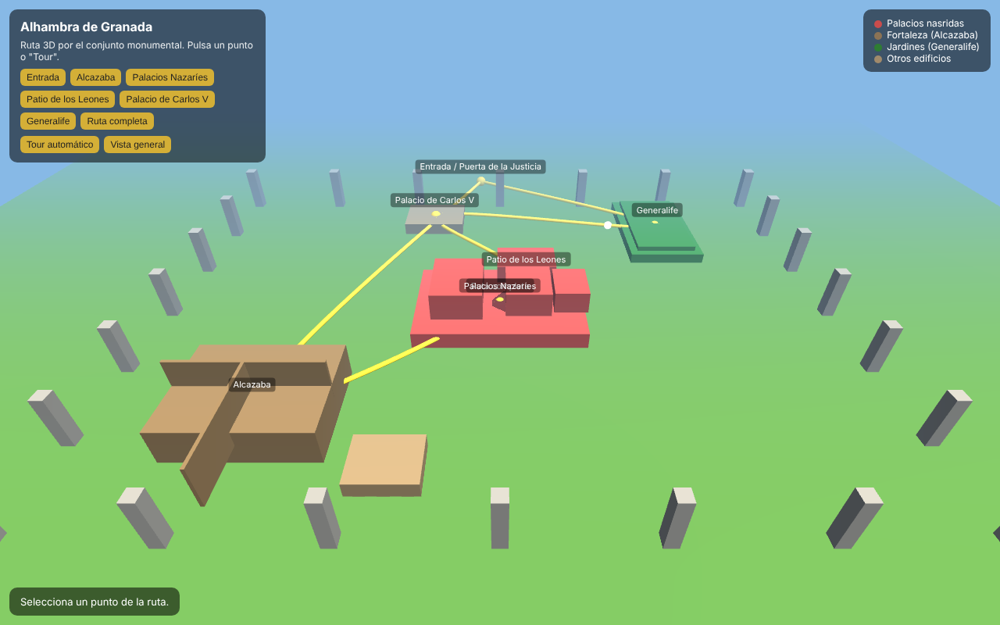
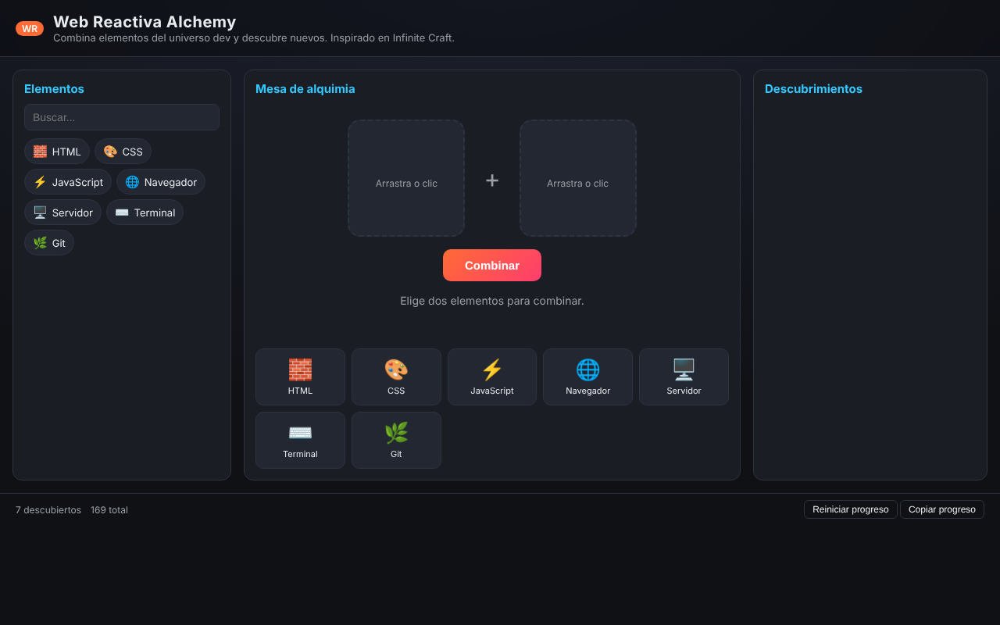
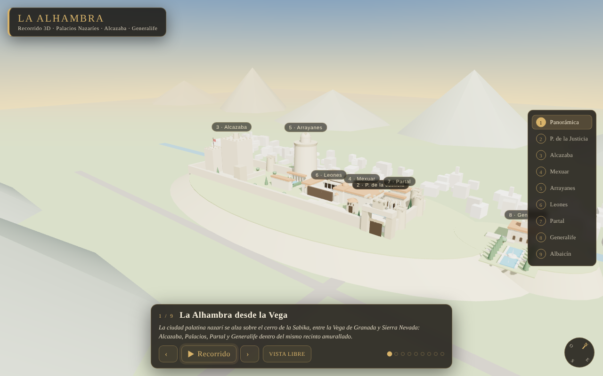
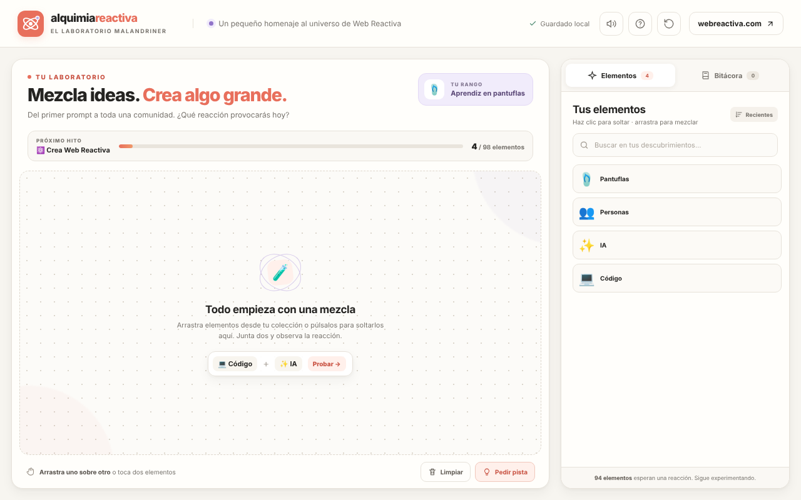

| Prompt | Modelo | Tokens | Pet. | Ficheros | Validación | Nota | Juicio | Captura |
|---|---|---|---|---|---|---|---|---|
| A3D visual |
claude-haiku-5-5 Claude Code · 2026-11-19 21:07 UTC |
981.1 k in 22 · out 55.5 k razon. 0 · caché 856.3 k |
11 | alhambra-ruta-3d.html | ✔ carga · alhambra-ruta-3d.html ✔ carga sin errores, three.js 0.160 desde jsDelivr ✔ tour, anterior/siguiente y velocidad funcionan ✖ el tubo de la ruta y el marcador tapan la vista en el tour |
8 funciona, la ruta tapa la Alhambra |
Un HTML con three.js sin errores, con paisaje (cielo, Sierra Nevada nevada, torres con tejado, cipreses del Generalife), 10 paradas con texto bueno y controles completos. Pero el tubo amarillo de la ruta y el marcador ocupan media pantalla durante el tour, y los edificios siguen siendo bloques. juicio |  |
| AIF visual |
claude-haiku-5-5 Claude Code · 2026-11-19 21:11 UTC |
268.4 k in 10 · out 28.8 k razon. 0 · caché 200.6 k |
5 | alquimia-web-reactiva.html | ✔ carga · alquimia-web-reactiva.html ✔ carga sin errores, sin dependencias ✔ arrastrar: Código + Humano → Programador, Humano + Idea → Prompt ✔ 54 de 54 elementos alcanzables (juez/alcanzables.js) |
9 se juega y es de Web Reactiva |
Mesa de juego como Infinite Craft (arrastrar y soltar una cosa sobre otra), 54 elementos y 50 recetas, todas alcanzables desde Código, Humano, Idea y Café. El contenido sale de webreactiva.com de verdad: agentes, skills, MCP, SDD, OpenSpec, AI slop, podcast, cursos. Le falta lo infinito: con una tabla fija, la mayoría de mezclas no dan nada. juicio |  |
| CCA código |
claude-haiku-5-5 Claude Code · 2026-11-19 21:04 UTC |
635.8 k in 22 · out 32.1 k razon. 0 · caché 561.6 k |
11 | README.md examples/basic.js package.json src/cart-service.js src/cart.js src/catalog.js src/errors.js src/events.js … y 7 más |
✔ npm test: 30/30 (node:test, sin dependencias) ✔ npm run example cuadra a mano ✔ 50 escrituras concurrentes: ninguna se pierde ✔ rechaza USD en carrito EUR y el id ../ ~ 44 de 50 acaban en CONCURRENCY_CONFLICT con 5 reintentos |
9 escala de verdad |
Librería JS sin dependencias que resuelve lo que «escalable» exige: servicio sin estado, concurrencia optimista por versión con reintentos, dinero en céntimos, una moneda por carrito, precios del catálogo y no del cliente, dominio inmutable, reglas de precio e impuestos. 30 tests en verde. Le falta un adaptador real (solo memoria), caducidad de carritos y espera entre reintentos. juicio | |
| PTS texto |
claude-haiku-5-5 Claude Code · 2026-11-19 21:03 UTC |
75.1 k in 4 · out 3.1 k razon. 0 · caché 61.1 k |
2 | tests-que-fallan-peor-que-no-tenerlos.md | 953 palabras · slop 14.0 (1.47/100 pal.) | 6 bien |
953 palabras con un argumento de verdad: un test inestable enseña al equipo a ignorar el rojo («normalización del fallo») y da una seguridad falsa que sin tests no existe. Un caso concreto (timeout de red, regresión de facturación que se pierde) y cinco prácticas útiles. Le sobran la lista con etiquetas en negrita, la «Conclusión» y una cita inventada. juicio | |
| PTS texto |
google/gemini-4-carbon OpenCode · 2026-11-20 10:23 UTC |
22.5 k in 10.3 k · out 2.2 k razon. 734 · caché 9.3 k |
3 | tests-que-fallan-a-veces.md | ✔ un post en Markdown, en español, de 1196 palabras ~ 1,3 marcas de slop por cada 100 palabras: 18 negritas, listas con etiqueta, ❌/✅, sección «Conclusión» ✔ código antes y después (TTL de un token con setTimeout frente a reloj inyectado) ✔ la cifra de las colas de merge es correcta: 1 − 0,95³ ≈ 14 %, uno de cada siete |
9 completo, con tics de formato |
Defiende bien la tesis (no tener tests es una incertidumbre honesta; un test intermitente da permiso para ignorar la prueba) con un ejemplo de código antes y después y una cifra correcta sobre colas de merge. Pierde un punto por el formato de blog generado: dieciocho negritas, listas con etiqueta, emojis y una sección «Conclusión». juicio | |
| A3D visual |
gpt-6.2-astra (default) Codex CLI · 2026-11-20 09:41 UTC |
111.6 k in 18.4 k · out 6.4 k razon. 23 · caché 86.8 k |
5 | alhambra.html | ✔ carga · alhambra.html ✔ abre sin errores de consola ✔ 3D propio en canvas 2D (sin librerías, 7,9 KB): se gira arrastrando y tiene zoom ✖ «Siguiente parada» solo cambia el texto y resalta la chincheta: la cámara no se mueve ✔ ruta de 5 paradas reales en orden de visita ~ se reconocen las torres de la Alcazaba y el patio circular de Carlos V; las albercas apenas se ven ✔ textos de las paradas correctos |
6 maqueta limpia, la cámara no viaja |
Una maqueta en 3D hecha a mano en canvas, sin librerías y en 8 KB, con torres almenadas y el patio circular de Carlos V, y una ruta de cinco paradas reales con textos correctos. Pero «Siguiente parada» solo cambia el texto: la cámara se queda quieta, así que la ruta no se recorre. juicio |  |
| AIF visual |
gpt-6.2-astra (default) Codex CLI · 2026-11-20 09:43 UTC |
129.8 k in 15.6 k · out 6.8 k razon. 54 · caché 107.4 k |
5 | index.html | ✔ carga · index.html ✔ abre sin errores de consola ✔ Código + Idea → Proyecto; IA + Código → Copilot; Comunidad + IA → Programa con IA ✔ guarda el progreso al recargar ✔ 35 de 35 elementos alcanzables con 32 recetas ✖ una mezcla sin receta no da nada («Sin reacción») ~ dos casillas y un botón; se arrastra o se pulsa, no hay lienzo libre ✔ Web Reactiva de verdad sin buscar en la web: Zona Malandriner, En pantuflas, Programa con IA, Atlas MCP, OpenSpec |
8 pequeño, completo y de la casa |
Un juego de casillas con 35 elementos y 32 recetas, todos alcanzables, con contenido reconocible de Web Reactiva (Zona Malandriner, En pantuflas, Atlas MCP) sin haber consultado la web. Guarda, busca y da pistas en 9 KB, pero no hay lienzo libre y las mezclas sin receta no dan nada. juicio |  |
| CCA código |
gpt-6.2-astra (default) Codex CLI · 2026-11-20 09:46 UTC |
191.7 k in 16.4 k · out 6.0 k razon. 73 · caché 169.2 k |
9 | cart.js index.html media/alpes.jpg media/bosque.jpg media/lago.jpg media/valle.jpg style.css |
✔ se abre index.html sin instalar nada ✖ sin tests ✔ suma, resta, quita y recalcula envío y total; guarda al recargar ✔ precios en céntimos, una sola moneda ✔ localStorage manipulado: cantidades negativas, decimales e ids falsos fuera; 1e9 se queda en 99 ✖ sin servidor, API ni almacenamiento compartido: no hay concurrencia ni escala ✖ sin README ~ no hay botón de vaciar |
4 maqueta de carrito, sin escalar |
Una página de carrito bien acabada con cuatro láminas, envío gratis desde 75 € y persistencia en localStorage que valida lo que lee. No hay tests, ni servidor, ni README: «escalable» se queda en que el catálogo es una lista que se puede ampliar. juicio | |
| PTS texto |
gpt-6.2-astra (default) Codex CLI · 2026-11-20 09:39 UTC |
95.4 k in 6.3 k · out 1.9 k razon. 0 · caché 87.2 k |
5 | tests-intermitentes.md | ✔ un post en Markdown, en español, de 611 palabras ✔ 0,2 marcas de slop por cada 100 palabras (una negrita, un cierre «La próxima vez que») ✖ por debajo de 700 palabras ✔ un caso con código (sleep de 0,5 s) y números (20 ms en local, 700 ms en CI) |
9 afilado, con código, corto |
Defiende la tesis con el mecanismo correcto: relanzar el rojo es racional para cada persona y, repetido por todo el equipo, esconde la regresión real del IVA. Tiene un caso con código y números bien elegidos, sin slop ni errores, pero se queda en 611 palabras. juicio | |
| A3D visual |
gpt-6.2-astra (medium) Codex CLI · 2026-11-20 09:56 UTC |
94.6 k in 15.3 k · out 7.1 k razon. 79 · caché 72.1 k |
4 | alhambra.html | ✔ carga · alhambra.html ✔ abre sin errores de consola ✔ 3D propio en canvas (17 KB, sin librerías): se gira arrastrando y tiene zoom ✖ «Siguiente parada» cambia la parada activa y su texto, pero la cámara no se mueve ✔ ruta de 6 paradas en orden de visita, con el Paseo de las Torres ~ se ven las torres de la Alcazaba y la alberca del Partal; el patio de Carlos V no se distingue ✔ textos de las paradas correctos |
6 maqueta bonita, la cámara no viaja |
Una maqueta 3D hecha a mano en canvas, más trabajada que con el esfuerzo por defecto, con una ruta de seis paradas reales y textos correctos. Pero repite el fallo: «Siguiente parada» no mueve la cámara, así que la ruta no se recorre. juicio |  |
| AIF visual |
gpt-6.2-astra (medium) Codex CLI · 2026-11-20 09:59 UTC |
67.3 k in 12.1 k · out 5.8 k razon. 86 · caché 49.3 k |
3 | index.html | ✔ carga · index.html ✔ abre sin errores de consola ✔ Código + Micrófono → Podcast; Código + Idea → Proyecto; Comunidad + Comunidad → Zona Malandriner ✔ guarda el progreso al recargar ✔ 36 de 36 elementos alcanzables con 32 recetas ✖ una mezcla sin receta no da nada («Sin reacción») ~ se pulsan o arrastran dos elementos a la mesa, sin lienzo libre ~ Web Reactiva a medias: Zona Malandriner, Top Malandriner, podcast premium y newsletter; el resto es desarrollo web genérico |
7 se juega, Web Reactiva a medias |
Un juego de mesa de mezclas con 36 elementos y 32 recetas, todos alcanzables, que guarda, busca y da pistas. Lo de Web Reactiva se queda en Zona Malandriner, Top Malandriner, el podcast premium y la newsletter: el resto es frontend, backend, API y framework, y las mezclas sin receta no dan nada. juicio |  |
| CCA código |
gpt-6.2-astra (medium) Codex CLI · 2026-11-20 10:01 UTC |
177.8 k in 13.9 k · out 6.1 k razon. 116 · caché 157.7 k |
8 | app.js assets/product0.webp assets/product1.webp assets/product2.webp cart.js index.html style.css |
✔ se abre index.html sin instalar nada ✖ sin tests ✔ suma, resta, quita y recalcula; envío gratis desde 60 €; guarda al recargar ✔ precios en céntimos, una sola moneda ✔ localStorage manipulado: negativos, decimales e ids falsos fuera; 1e9 se queda en 99 ✖ sin servidor, API ni almacenamiento compartido: no hay concurrencia ni escala ✖ sin README ~ no hay botón de vaciar |
4 tienda de café, sin escalar |
Una página de carrito cuidada para una tienda de café, con fotos generadas, guardar para después y envío gratis desde 60 €, que valida lo que lee de localStorage. No hay tests, ni servidor, ni README: «escalable» es que el catálogo es una lista ampliable. juicio | |
| PTS texto |
gpt-6.2-astra (medium) Codex CLI · 2026-11-20 09:55 UTC |
67.0 k in 6.9 k · out 1.4 k razon. 0 · caché 58.8 k |
4 | tests-intermitentes.md | ✔ un post en Markdown, en español, de 709 palabras ✔ 0,14 marcas de slop por cada 100 palabras (un cierre «La próxima vez que») ✔ dos bloques de Python: el test que falla al cruzar la medianoche y su arreglo; el juez comprueba que el ejemplo de 23:30 UTC-5 da el 1 de febrero |
10 el post completo |
Explica por qué un test intermitente puede salir más caro que el hueco que deja: da una falsa sensación de cobertura y enseña a ignorar el único aviso útil. Lo ilustra con un test de Python que falla al cruzar la medianoche y su arreglo, ambos correctos, sin slop y con la extensión justa. juicio | |
| A3D visual |
gpt-6.2-sol (medium) Codex CLI · 2026-11-20 09:01 UTC |
1688.3 k in 70.6 k · out 21.4 k razon. 2.9 k · caché 1593.5 k |
32 | alhambra.html | ✔ carga · alhambra.html ✔ abre sin errores de consola ✔ «Siguiente» lleva la cámara por las 5 paradas ~ «Iniciar ruta» encuadra la primera parada y no avanza sola ✔ se reconocen las torres de la Alcazaba, el patio circular de Carlos V y la acequia del Generalife ✔ textos de las paradas correctos ~ 790 KB: three.js y las fuentes van dentro del HTML |
10 maqueta clara y se recorre |
Una maqueta 3D en low-poly con las torres de la Alcazaba, el patio circular de Carlos V y la acequia del Generalife, y una ruta de cinco paradas en orden de visita que la cámara recorre con «Siguiente». La vista no se tapa, las etiquetas se leen y los textos son correctos; el botón «Iniciar ruta» solo encuadra la primera parada. juicio |  |
| AIF visual |
gpt-6.2-sol (medium) Codex CLI · 2026-11-20 09:11 UTC |
1479.8 k in 66.3 k · out 19.2 k razon. 2.1 k · caché 1392.3 k |
27 | index.html | ✔ carga · index.html ✔ abre sin errores de consola ✔ Código + Curiosidad → Proyecto; Café + Código → Terminal ✔ guarda el progreso al recargar ✔ 52 de 52 elementos alcanzables con 84 recetas (juez/alcanzables con node) ✖ una mezcla sin receta no da nada («Esta mezcla no ha reaccionado») ~ se combina en dos ranuras y un botón, no en un lienzo libre ✔ contenido de Web Reactiva: En pantuflas, Esperando a Eskainet, Wikipoke, Premium, Telegram, OpenSpec |
8 pulido y muy de la casa |
Un juego de ranuras con 52 elementos y 84 recetas, todos alcanzables, sacados de lo que encontró en webreactiva.com: el podcast, En pantuflas, Esperando a Eskainet, Wikipoke o el MCP de Web Reactiva. Guarda, busca y da pistas, pero no hay lienzo libre y las mezclas sin receta no dan nada. juicio |  |
| CCA código |
gpt-6.2-sol (medium) Codex CLI · 2026-11-20 09:19 UTC |
1193.2 k in 47.9 k · out 18.9 k razon. 2.7 k · caché 1123.7 k |
27 | README.md package.json public/assets/bolsa.webp public/assets/cuenco.webp public/assets/dm-sans-OFL.txt public/assets/dm-sans.woff2 public/assets/dm-serif-display-OFL.txt public/assets/dm-serif-display.woff2 … y 13 más |
✔ npm start sin dependencias: sirve la app en el puerto 3000 ✔ npm test: 4 de 4 ✔ precios en céntimos; 0,10 × 3 = 30 ✔ id con ../ ignorado; cantidades negativas o decimales, a 0; por encima de las existencias, al tope ✔ el localStorage manipulado solo conserva id y cantidad válidos ✖ no hay API: el carrito vive en el navegador (localStorage); el servidor solo sirve ficheros ✖ las 50 altas a la vez no se pueden probar: no hay servicio ✖ quoteCart devuelve el producto del catálogo: cambiar su precio cambia el catálogo ~ no hay botón de vaciar; el carrito se vacía al confirmar el pedido |
5 bonita tienda, no escala |
Una tienda en el navegador muy cuidada, con fotos generadas, cupón, envío y deshacer, y un carrito con funciones puras en céntimos que valida bien lo que lee de localStorage. «Escalable» lo entiende como un catálogo ampliable: no hay servicio, ni almacenamiento compartido, ni concurrencia, y el README solo dice que para producción haría falta un servidor. juicio | |
| PTS texto |
gpt-6.2-sol (medium) Codex CLI · 2026-11-20 09:01 UTC |
48.8 k in 5.1 k · out 989 razon. 38 · caché 42.6 k |
3 | tests-que-fallan-a-veces.md | ✔ un post en Markdown, en español, de 607 palabras ✔ 0 marcas de slop ✖ por debajo de 700 palabras ~ un solo caso (cola de correos con espera de 100 ms), sin código |
8 limpio, centrado y corto |
Defiende la tesis con el mecanismo correcto: un rojo que se relanza enseña a ignorar el rojo, y el día que es una regresión real nadie lo mira. Sin slop ni errores, con un caso bien contado, pero se queda en 607 palabras y sin código. juicio | |
| A3D visual |
nvidia/nemotron-3-ultra-550b-a55b:free OpenCode · 2026-11-19 20:57 UTC |
54.3 k in 8.9 k · out 10.0 k razon. 333 · caché 35.1 k |
3 | alhambra-3d-route.html | ✔ carga · alhambra-3d-route.html ✔ carga sin errores, three.js 0.160 desde unpkg ✔ el tour avanza (captura a 8 s y 38 s) ✖ 2 errores al iniciar el tour (CatmullRomCurve3.getPoint) |
6 funciona, poco Alhambra |
Un HTML con three.js que carga, enseña 14 paradas con nombre y un tour animado con cámara que sigue una curva, lista de paradas y teclas. Las paradas y el orden son los de una visita real, pero los edificios son cajas y cilindros sin nada nazarí, la cámara atraviesa los volúmenes y salen dos errores al empezar. juicio |  |
| AIF visual |
nvidia/nemotron-3-ultra-550b-a55b:free OpenCode · 2026-11-19 21:00 UTC |
77.3 k in 14.0 k · out 14.9 k razon. 195 · caché 48.2 k |
4 | alchemy.html | ✔ carga · alchemy.html ✔ carga sin errores ✔ HTML + JavaScript → HTML Dinámico ✖ HTML + CSS → «No hay combinación válida» ✖ solo 4 de 62 recetas descubribles (juez/alcanzables.js) |
3 se ve bien, no se puede jugar |
Interfaz muy cuidada (barra lateral con búsqueda, lienzo, ranuras, avisos, exportar), pero el juego está roto: getKey ordena los ids y 35 de las 62 recetas tienen la clave al revés, así que HTML + CSS no da nada y solo se pueden descubrir 4 elementos. 11 recetas usan ingredientes que no existen. De Web Reactiva solo tiene el título: el contenido son tecnologías web genéricas. juicio |  |
| CCA código |
nvidia/nemotron-3-ultra-550b-a55b:free OpenCode · 2026-11-19 20:47 UTC |
459.6 k in 69.1 k · out 12.7 k razon. 760 · caché 377.0 k |
25 | examples/basic.ts jest.config.js package.json src/cart.ts src/event-bus.ts src/index.ts src/storage.ts src/types.ts … y 24 más |
✔ npm ci + tsc compila ✔ 24/24 tests suyos en verde ✔ npm run dev corre los ejemplos ✖ 50 addItem concurrentes → guarda 1 ✖ suma EUR + USD como EUR ✖ id con ../ escribe fuera de la carpeta |
4 funciona, pero no escala |
Librería TypeScript ordenada (servicio, adaptadores de almacenamiento, bus de eventos) que compila y pasa sus 24 tests. Lo que pedía el prompt, «escalable», no aguanta: 50 peticiones concurrentes al mismo carrito dejan 1 línea, sin TTL, sin control de versiones y dinero en coma flotante. juicio | |
| PTS texto |
nvidia/nemotron-3-ultra-550b-a55b:free OpenCode · 2026-11-19 20:46 UTC |
17.6 k in 8.1 k · out 682 razon. 71 · caché 8.8 k |
2 | por-que-tests-flaky-son-peores-que-no-tener-tests.md | 359 palabras · slop 8.0 (2.23/100 pal.) | 4 cumple el mínimo |
Post de 359 palabras con estructura de listado: cinco razones y cinco consejos sin un solo ejemplo, dato o caso. Tesis clara y limpio de muletillas, pero cierre de chatbot, «costo», anglicismos y nada que no esté en el primer resultado de Google. juicio | |
| A3D visual |
ollama/beam OpenCode · 2026-11-20 03:10 UTC |
63.9 k in 15.0 k · out 9.9 k razon. 0 · caché 39.1 k |
5 | alhambra.html | ✔ carga · alhambra.html ✔ carga sin errores; 8 KB ✔ el tour mueve la cámara de parada en parada ✖ la Alhambra son cajas y pilares |
7 funciona, pero son cajas |
El A3D más pequeño (8 KB, 209 líneas, 5 peticiones): seis paradas reales, botones para cada una y un tour automático que mueve la cámara de la Alcazaba al Generalife. Pero la Alhambra son cajas de colores rodeadas de un anillo de pilares, la cámara se pega a los volúmenes y el panel no muestra el texto de la parada durante el tour. juicio |  |
| AIF visual |
ollama/beam OpenCode · 2026-11-20 03:11 UTC |
202.7 k in 52.9 k · out 27.9 k razon. 0 · caché 121.9 k |
7 | web-reactiva-alchemy.html | ✔ carga · web-reactiva-alchemy.html ✔ carga sin errores; 21 KB ✔ HTML + CSS y Terminal + Git combinan ✖ solo 12 de 169 elementos alcanzables ✖ contenido genérico |
5 solo se alcanzan 12 de 169 |
Mesa de dos ranuras con siete elementos iniciales de desarrollo web (HTML, CSS, JavaScript, Navegador, Servidor, Terminal, Git). Las primeras mezclas funcionan, pero de 169 elementos solo se pueden alcanzar 12: muchas recetas piden ingredientes, como React, que no salen de ninguna. De Web Reactiva tiene el nombre y algún «Podcast». juicio |  |
| CCA código |
ollama/beam OpenCode · 2026-11-20 03:28 UTC |
240.5 k in 29.8 k · out 8.6 k razon. 0 · caché 202.1 k |
20 | package.json src/cart.js src/cartManager.js src/events.js src/http/server.js src/index.js src/inventory.js src/locking.js … y 3 más |
✔ npm test 4/4 ✔ 50 altas a la vez: 50 unidades (cerrojo en memoria) ✖ dinero en coma flotante: 0,10 × 3 = 0.30000000000000004 ✖ el precio lo manda el cliente ✖ sin almacenamiento compartido ni README |
4 funciona, no escala |
Node sin dependencias, 413 líneas: carrito, gestor con un cerrojo en memoria por carrito, repositorio en memoria, inventario opcional, eventos, cupones y una API HTTP, con 4 tests en verde. Pero el dinero va en coma flotante, el precio lo manda el cliente, todo vive en un proceso y no hay README. juicio | |
| PTS texto |
ollama/beam OpenCode · 2026-11-20 03:14 UTC |
55.5 k in 13.9 k · out 3.8 k razon. 0 · caché 37.8 k |
6 | post-tests-flaky.md | 662 palabras · slop 8.8 (1.32/100 pal.) | 7 esquema útil, poco post |
662 palabras que van al grano y no se salen del tema: un test intermitente es información falsa y sin tests al menos «no te mientes»; el test como sensor, la regla de reproducirlo en 5 minutos o borrarlo en 24 horas, siete estrategias y una checklist. Pero es casi un esquema en listas, sin un caso ni código, y mezcla inglés («beats», «un test suite», «Des moralización»). juicio | |
| A3D visual |
ollama/deepseek-v4.1-flash OpenCode · 2026-11-19 22:38 UTC |
2231.2 k in 90.7 k · out 73.6 k razon. 0 · caché 2066.9 k |
33 | alhambra-3d.html | ✔ carga · alhambra-3d.html ✔ carga sin errores, three.js desde jsDelivr ✔ vista general con colina, muralla, Carlos V, Generalife y Sierra Nevada ✖ en el tour la cámara se mete en la muralla y a los 35 s sigue en la parada 1 |
6 la mejor maqueta, el tour falla |
La vista general es la mejor de todo el benchmark: colina de la Sabika amurallada, Alcazaba con torres, Palacio de Carlos V con su patio circular, Generalife con la acequia, casas alrededor y Sierra Nevada. Pero al iniciar el recorrido la cámara se mete dentro de la muralla y a los 35 s sigue en la primera de solo 5 paradas. juicio |  |
| AIF visual |
ollama/deepseek-v4.1-flash OpenCode · 2026-11-19 23:50 UTC |
2646.1 k in 136.5 k · out 92.1 k razon. 0 · caché 2417.4 k |
32 | index.html | ✔ carga · index.html ✔ carga sin errores; 86 KB sin dependencias ✔ arrastrar: Developer + IA → Copiloto, Café + Prompt → Idea ✔ 78 de 78 elementos alcanzables, el Atlas Malandriner incluido (juez/alcanzables.js) |
9 Infinite Craft de verdad |
La mecánica más fiel a Infinite Craft de todo el benchmark: lienzo libre donde se suelta una pieza sobre otra, almacén con buscador y una misión (descubrir el Atlas Malandriner). 78 elementos y 90 recetas sacados de webreactiva.com, todos alcanzables, con pistas, sonido y guardado. Pero no es infinito: fuera de las 90 recetas, las mezclas no dan nada. juicio |  |
| CCA código |
ollama/deepseek-v4.1-flash OpenCode · 2026-11-19 22:47 UTC |
1143.5 k in 62.4 k · out 49.7 k razon. 0 · caché 1031.4 k |
26 | README.md index.html package.json server.js src/config/pricing.js src/core/Cart.js src/core/CheckoutService.js src/core/EventEmitter.js … y 12 más |
✔ carga · index.html ✔ npm test: 23/23 ✔ npm start sirve la tienda y añadir al carrito funciona ~ el carrito vive en localStorage: no hay backend que escalar |
6 bonito, escala el código, no el sistema |
Una tienda completa y muy cuidada (catálogo, búsqueda, carrito, cupones, envío, IVA, checkout) con un motor de precios por reglas, dinero en céntimos, almacenamiento intercambiable y 23 tests. Pero el carrito vive en localStorage y el servidor solo sirve estáticos: «escalable» lo resuelve como código fácil de ampliar, sin nada que aguante muchos usuarios. juicio | |
| PTS texto |
ollama/deepseek-v4.1-flash OpenCode · 2026-11-19 22:49 UTC |
29.6 k in 9.2 k · out 2.9 k razon. 0 · caché 17.5 k |
3 | tests-que-fallan-peores-que-no-tener-tests.md | – | 8 bueno, pero se desvía |
1426 palabras con buenos argumentos (habituación, fatiga de alarmas, «500 tests con 30 en rojo son 470 con un 100 % de desconfianza», el test que se vuelve «guardián del error») y un ejemplo de skip en pytest. Pero trata sobre todo de tests que fallan siempre o se ignoran, no de los que fallan «a veces», y tiene más slop de formato: 20 negritas, listas con etiqueta y «Conclusión». juicio | |
| A3D visual |
ollama/glm-5.3-flash OpenCode · 2026-11-20 00:36 UTC |
1822.9 k in 77.6 k · out 63.8 k razon. 0 · caché 1681.5 k |
29 | alhambra-3d.html | ✔ carga · alhambra-3d.html ✔ carga sin errores; 37 KB ✔ la ruta guiada arranca sola y avanza (15, 35 y 60 s) ✔ vista libre: Comares, Carlos V, Leones, Alcazaba, Justicia, Darro ✖ empieza dentro de un muro y en el recorrido roza las paredes |
9 se recorre y se reconoce |
Ruta guiada a pie de calle que arranca sola y avanza por 8 puntos (Justicia, Vino, Alcazaba, Carlos V, Leones, Arrayanes y Comares, Generalife) más un modo libre con una de las mejores maquetas del benchmark: la Torre de Comares, Carlos V con su patio circular, el anillo de columnas de los Leones, la Alcazaba almenada y el Darro. Pero empieza dentro de un muro y en el recorrido la cámara roza las paredes. juicio |  |
| AIF visual |
ollama/glm-5.3-flash OpenCode · 2026-11-20 00:42 UTC |
250.7 k in 65.3 k · out 57.8 k razon. 0 · caché 127.6 k |
4 | web-reactiva-craft.html | ✔ carga · web-reactiva-craft.html ✔ carga sin errores; 25 KB ✔ tras cerrar la bienvenida, soltar una ficha sobre otra combina ✔ 145 de 145 recetas alcanzables; las mezclas sin receta dan «invenciones raras» ✖ contenido inventado: «Nacho Ojea», «Trece Tigres», «La Red» no son de Web Reactiva |
8 buen juego, Web Reactiva inventado |
Mecánica muy fiel a Infinite Craft (mesa infinita con zoom, soltar una ficha sobre otra, panel de descubrimientos con buscador, sonidos), 145 recetas todas alcanzables y un generador de «invenciones raras» para las mezclas sin receta. Pero el contenido de Web Reactiva es inventado: «Nacho Ojea», «Trece Tigres», «La Red», ZX Spectrum y GeoCities; parte de Internet, Radio, Cine y Juego. juicio |  |
| CCA código |
ollama/glm-5.3-flash OpenCode · 2026-11-19 22:45 UTC |
1083.0 k in 45.9 k · out 32.9 k razon. 0 · caché 1004.2 k |
33 | .gitignore .pytest_cache/.gitignore .pytest_cache/CACHEDIR.TAG .pytest_cache/README.md .pytest_cache/v/cache/lastfailed .pytest_cache/v/cache/nodeids README.md __pycache__/conftest.cpython-313-pytest-9.1.1.pyc … y 44 más |
✔ pytest: 24/24 ✔ 50 hilos concurrentes en memoria: 50 líneas ✔ Decimal: 0,10 × 3 = 0.30 ✖ adaptador Redis: cualquier excepción acaba en AttributeError (self._client.WatchError no existe) |
8 bien diseñado, Redis roto |
Python con capas (dominio, aplicación, infraestructura, API HTTP), Decimal para el dinero, precios del catálogo, bloqueo por carrito en memoria, límites y 24 tests en verde. Pero el adaptador de Redis, que es lo que lo haría escalar, captura self._client.WatchError, que no existe: un conflicto de concurrencia o cualquier error de negocio acaba en AttributeError. juicio | |
| PTS texto |
ollama/glm-5.3-flash OpenCode · 2026-11-19 22:48 UTC |
29.6 k in 10.1 k · out 2.6 k razon. 0 · caché 17.0 k |
3 | tests-flaky-son-peores-que-no-tener-tests.md | 981 palabras · slop 7.8 (0.79/100 pal.) | 9 el mejor post |
981 palabras con la tesis bien defendida (sin tests sabes que no hay red; con tests que mienten crees que la hay), costes con números (un test que falla 1 de cada 50 con 100 ejecuciones al día interrumpe a diario), un ejemplo en Go, las causas típicas y cinco pasos. El menos slop de todos. Falla en el ejemplo: dice que pasa el 99 % y casi siempre fallará. juicio | |
| A3D visual |
ollama/inkling-2-small OpenCode · 2026-11-20 01:35 UTC |
1202.2 k in 176.1 k · out 47.9 k razon. 0 · caché 978.2 k |
24 | alhambra-3d.html | ✔ carga · alhambra-3d.html ✔ carga sin errores; 43 KB ✔ el recorrido automático viaja de parada en parada ✖ en los patios la cámara se mete en los muros |
9 bonita y se recorre |
Maqueta clara del cerro de la Sabika con muralla, Alcazaba con bandera, Comares, Generalife con su alberca, Albaicín, el Darro y Sierra Nevada, 9 paradas con textos correctos y un recorrido automático que viaja de verdad. Pero al bajar a los patios la cámara se mete en los muros, y Comares sale como una torre redonda con cúpula. juicio |  |
| AIF visual |
ollama/inkling-2-small OpenCode · 2026-11-20 01:41 UTC |
688.7 k in 152.8 k · out 42.1 k razon. 0 · caché 493.8 k |
15 | alquimia-reactiva.html | ✔ carga · alquimia-reactiva.html ✔ carga sin errores; 41 KB ✔ ficha sobre ficha combina; 125 de 125 alcanzables ~ soltar desde la barra sobre una ficha no combina ~ contenido de Web Reactiva a medias |
9 se juega, Web Reactiva a medias |
Mesa libre con fichas que se combinan soltando una sobre otra, 125 elementos todos alcanzables y un generador para las mezclas sin receta. Parte de Agua, Fuego, Aire y Tierra y mezcla programación genérica (React, Rust, Docker) con algo de Web Reactiva (podcast, masterclass, «Maratón WR», «Membresía WR», «Slow Content»), sin mirar la web. juicio |  |
| CCA código |
ollama/inkling-2-small OpenCode · 2026-11-20 01:44 UTC |
1042.4 k in 145.2 k · out 31.4 k razon. 0 · caché 865.8 k |
40 | .gitignore README.md package.json src/application/cartService.ts src/application/cartView.ts src/application/ports.ts src/config.ts src/domain/cart.ts … y 16 más |
✔ build y 21/21 tests ✔ 50 altas a la vez: 50 guardadas ✔ precio del catálogo, céntimos, CAS por versión, TTL ~ solo repositorios en memoria: varias instancias no comparten carrito |
9 bien diseñado, sin Redis |
API Fastify sin estado en TypeScript, con capas y puertos, dinero en céntimos, precio del catálogo, cupones, IVA, envío, caducidad de carritos y compare-and-set por versión en el repositorio. Compila, pasa 21 tests y 50 altas a la vez no pierden nada. Pero solo trae repositorios en memoria: Redis o Postgres quedan como «pendiente». juicio | |
| PTS texto |
ollama/inkling-2-small OpenCode · 2026-11-20 01:47 UTC |
30.7 k in 11.4 k · out 2.2 k razon. 0 · caché 17.2 k |
3 | tests-que-fallan-peor-que-no-tener-tests.md | 1045 palabras · slop 9.8 (0.93/100 pal.) | 8 limpio y útil, se abre de tema |
1045 palabras con la tesis bien defendida (fatiga de alertas, el rojo que deja de bloquear, «saltar con una red que no sabes si está atada»), un caso concreto de flujo de CI y un plan de salida útil (presupuesto de flakiness, cuarentena con dueño, orden aleatorio, reloj inyectado). Poco slop. Pero reparte el post entre cuatro tipos de test que falla y los intermitentes son solo uno. juicio | |
| A3D visual |
ollama/kimi-k3.1-pro OpenCode · 2026-11-20 01:48 UTC |
1008.0 k in 53.4 k · out 44.6 k razon. 0 · caché 910.0 k |
23 | index.html | ✔ carga · index.html ✔ carga sin errores; 67 KB sin dependencias ✔ el recorrido lleva la cámara de parada en parada ✔ vista limpia y textos correctos |
10 el mejor A3D, sin librerías |
Una maqueta 3D con motor propio, sin three.js ni nada externo, que se reconoce (murallas almenadas, Alcazaba, Carlos V con su patio circular, los patios nazaríes con su fuente, el Generalife entre cipreses) y un recorrido de 6 paradas que lleva la cámara de una a otra sin atravesar nada. Diseño de guía turística: itinerario con tiempos, fichas, plano, atardecer, historia y consejos. juicio |  |
| AIF visual |
ollama/kimi-k3.1-pro OpenCode · 2026-11-20 01:58 UTC |
1714.8 k in 85.5 k · out 49.5 k razon. 0 · caché 1579.7 k |
25 | index.html | ✔ carga · index.html ✔ carga sin errores; 90 KB ✔ ficha sobre ficha combina; 98 de 98 alcanzables ✔ contenido real de webreactiva.com ✖ soltar desde la colección sobre una ficha la borra |
9 pulido y de Web Reactiva |
Contenido sacado de cuatro páginas de webreactiva.com (Malandriner, En pantuflas, Claude Code, Skills, MCP, SDD, «Deploy en viernes»), 98 elementos todos alcanzables, rangos («Aprendiz en pantuflas»), hitos, pistas, bitácora y una interfaz de producto. Mesa libre donde se combina soltando una ficha sobre otra. No es infinito: las mezclas sin receta dan un mensaje. juicio |  |
| CCA código |
ollama/kimi-k3.1-pro OpenCode · 2026-11-20 02:07 UTC |
174.6 k in 17.6 k · out 12.7 k razon. 0 · caché 144.3 k |
11 | main.py models/__init__.py models/__pycache__/__init__.cpython-313.pyc models/__pycache__/carrito.cpython-313.pyc models/__pycache__/item_carrito.cpython-313.pyc models/__pycache__/producto.cpython-313.pyc models/carrito.py models/item_carrito.py … y 8 más |
✔ 17/17 tests y main.py ✔ Decimal, una moneda, precio del catálogo, stock ✔ 50 hilos a la vez: 50 líneas ✖ una clase en memoria: sin servicio, sin persistencia, sin nada para escalar |
6 correcto, pero no escala |
Una clase Carrito en Python, limpia y bien validada (Decimal, una moneda por carrito, precio y stock del catálogo, 17 tests), pero sin servicio, sin persistencia y sin nada que responda a «escalable»: el carrito vive en un objeto en memoria y no hay README que lo explique. juicio | |
| PTS texto |
ollama/kimi-k3.1-pro OpenCode · 2026-11-20 02:10 UTC |
42.3 k in 9.5 k · out 3.5 k razon. 0 · caché 29.4 k |
4 | tests-intermitentes-peores-que-no-tener-tests.md | 1409 palabras · slop 10.8 (0.76/100 pal.) | 10 el mejor post |
1409 palabras sin salirse de los tests intermitentes, con la tesis defendida desde el principio («una habitación a oscuras» frente a «una alarma que suena al azar»), cuatro costes con mecanismo (oculta regresiones, entrena a ignorar el rojo, agranda los cambios, gasta atención), la cuenta bien hecha (200 tests al 99 % → 87 % de ejecuciones con algún fallo) y un plan práctico. El menos slop de todos. juicio | |
| A3D visual |
ollama/minimax-m3 OpenCode · 2026-11-19 22:39 UTC |
11368.3 k in 232.8 k · out 199.5 k razon. 0 · caché 10935.9 k |
80 | alhambra-3d.html | ✔ carga · alhambra-3d.html ✔ carga sin errores; 15 paradas, 4 vistas, hora del día, voz, minimapa ✖ el recorrido apenas avanza (1-3 % en 25 s) ✖ saltar a una parada cambia la ficha pero no mueve la cámara ✖ el minimapa tapa las paradas 11-15 de la lista |
4 lo más ambicioso, no se recorre |
El A3D con más cosas: 15 paradas con textos ricos y consejos de visita, 4 vistas, deslizador de hora del día, narración por voz, minimapa y arcos de herradura generados por código. Pero el recorrido apenas avanza, saltar a una parada no mueve la cámara (se queda en la plaza de entrada) y el minimapa tapa las paradas 11 a 15 de la lista. juicio |  |
| AIF visual |
ollama/minimax-m3 OpenCode · 2026-11-19 23:13 UTC |
11453.8 k in 226.6 k · out 168.8 k razon. 0 · caché 11058.4 k |
76 | alquimia-reactiva.html | ✔ carga · alquimia-reactiva.html ✔ carga sin errores; 192 KB, funciona sin conexión ✔ 6 de 6 mezclas probadas dan un elemento nuevo ✔ logo, colores y tipografía de Web Reactiva |
9 el mejor AIF, con mucho |
399 elementos y 1780 recetas sacados de webreactiva.com de verdad (glosario, cursos, skills, comunidad Malandriner), un generador para las mezclas sin receta, 7 legendarios, pistas, bitácora, compartir por URL, y el logo, los colores y la tipografía de la marca. Funciona sin conexión. Le falta el lienzo libre de Infinite Craft: combina en dos calderos. juicio |  |
| CCA código |
ollama/minimax-m3 OpenCode · 2026-11-20 00:06 UTC |
12922.7 k in 137.4 k · out 112.2 k razon. 0 · caché 12673.1 k |
155 | .env.example .gitignore .prettierignore .prettierrc.json README.md docker-compose.yml eslint.config.js package.json … y 254 más |
✔ npm ci, build, typecheck y lint ✔ 69/69 tests, también los de integración con Redis ✔ dos instancias con el mismo Redis: 40 altas a la vez, 22 guardadas = 22 aceptadas, 18 con 409 explícito ✔ límite de 10 unidades por línea (422) |
10 escala de verdad, con Redis |
Monorepo TypeScript con dominio hexagonal, API Fastify sin estado, Redis con scripts Lua (CAS por versión, reserva de stock, idempotencia), outbox, métricas, SSE y una tienda React. Compila, pasa 69 tests y, con dos instancias sobre el mismo Redis, 40 altas a la vez no pierden ni un dato. Lo único discutible: bajo mucha contención devuelve 409 en vez de reintentar más. juicio | |
| PTS texto |
ollama/minimax-m3 OpenCode · 2026-11-19 23:44 UTC |
103.9 k in 15.2 k · out 11.0 k razon. 0 · caché 77.7 k |
6 | tests-que-fallan.md | 2800 palabras · slop 26.8 (0.96/100 pal.) | 8 un ensayo, no un post |
2800 palabras con lo que no tiene ningún otro: la cuenta de por qué la suite casi nunca sale verde (0,95^1000), tablas de coste, código TypeScript con el antes y el después, niveles de suite y caducidad de la cuarentena. Pero es tres veces más largo que un post, tiene errores dentro de sus propios ejemplos y 43 negritas, 8 rayas y emojis. juicio | |
| A3D visual |
ollama/minimax-m3.1-flash OpenCode · 2026-11-20 02:11 UTC |
8784.4 k in 134.5 k · out 120.7 k razon. 0 · caché 8529.3 k |
90 | alhambra-3d.html build.py src/js/01_core.js src/js/02_entorno.js src/js/03_arquitectura.js src/js/03b_jardines.js src/js/04_recorrido.js src/js/05_ui.js … y 4 más |
✔ carga · alhambra-3d.html ✔ carga sin errores; 751 KB sin conexión ✔ el recorrido avanza (lento) ✖ fichas con datos inventados ✖ paneles y etiquetas tapan la escena |
8 mucho detalle, textos inventados |
El A3D más grande: 16 paradas, cámara sobre una curva que recorre el recinto, Carlos V con su patio circular, murallas, jardines, Sierra Nevada, minimapa, cuatro luces y three.js incrustado para funcionar sin conexión. Pero los paneles tapan media escena, las etiquetas se pisan y las fichas tienen datos inventados: una figura de «El Descubridor» que «señala La Meca» sobre la Puerta de la Justicia, Carlos V «erigido entre 1527 y 1537», Santa María como «la referencia más reconocible». juicio |  |
| AIF visual |
ollama/minimax-m3.1-flash OpenCode · 2026-11-20 02:37 UTC |
4636.5 k in 124.0 k · out 91.3 k razon. 0 · caché 4421.2 k |
55 | alquimia-web-reactiva.html | ✔ carga · alquimia-web-reactiva.html ✔ carga sin errores; 70 KB ✔ elemento sobre elemento combina; 203 de 203 alcanzables ✔ contenido real y amplio de webreactiva.com ~ sin generador para mezclas sin receta |
9 203 elementos de Web Reactiva |
Mesa libre donde se suelta un elemento sobre otro, 203 elementos y 199 recetas todos alcanzables, sacados de varias páginas de webreactiva.com: agentes, skills, SDD con OpenSpec y Spec Kit, MCP, costes de tokens, seguridad y la capa de marca (Dani Primo, Zona y Atlas Malandriner, En pantuflas). Pistas, recetario, compartir y guardado. Fuera de las recetas no hay generador. juicio |  |
| CCA código |
ollama/minimax-m3.1-flash OpenCode · 2026-11-20 02:48 UTC |
14602.0 k in 135.3 k · out 113.4 k razon. 0 · caché 14353.3 k |
154 | .dockerignore .env.example .gitignore Dockerfile README.md docker-compose.yml eslint.config.js package.json … y 119 más |
✔ build, typecheck, lint y 42/42 tests (arrancan su Redis) ✔ dos instancias sobre el mismo Redis: 40 altas a la vez, 40 aceptadas, 40 guardadas ✔ JWT (401 sin token), precio del servidor, céntimos |
10 el carrito más completo |
API Fastify sin estado con todo el carrito en Redis y cada mutación atómica en un script Lua, más concurrencia optimista por versión, idempotencia, outbox con worker y grupo de consumidores, rate limiting distribuido, JWT, métricas, Docker Compose para escalar réplicas y una prueba de carga con k6. Compila, pasa 42 tests y, con dos instancias, 40 altas a la vez entran todas sin un conflicto. juicio | |
| PTS texto |
ollama/minimax-m3.1-flash OpenCode · 2026-11-20 03:08 UTC |
331.8 k in 29.8 k · out 10.8 k razon. 0 · caché 291.2 k |
15 | post-tests-que-fallan.md | 3011 palabras · slop 40.5 (1.35/100 pal.) | 7 un manual, no un post |
3011 palabras con muy buen código (test que se «arregla» afirmando lo contrario, reloj congelado, espera activa en lugar de sleep, xfail con strict=True) y un plan por fases para salir de una suite roja. Pero cambia el tema: el título quita el «a veces», casi todo va de tests en rojo permanente y los intermitentes ocupan una sección. Tres veces más largo que un post, 66 negritas y palabras rotas. juicio | |
| A3D visual |
ollama/muse-spark-open OpenCode · 2026-11-20 03:15 UTC |
88.0 k in 8.3 k · out 16.2 k razon. 0 · caché 63.5 k |
5 | alhambra-ruta-3d.html | ✔ carga · alhambra-ruta-3d.html ✔ carga sin errores; 45 KB ✔ el recorrido automático avanza ✖ ~150 errores al saltar de parada ✖ la cámara va pegada a la geometría, también en vista aérea |
7 bonita por fuera, cámara perdida |
Interfaz muy cuidada (Cinzel, fichas con datos, progreso, minimapa, leyenda, día y noche) y 7 paradas con textos correctos, y el recorrido automático avanza. Pero la escena está tan a escala que la cámara va siempre pegada a los volúmenes, hasta en «vista aérea», y al saltar de parada con «Siguiente» la consola se llena de errores (unos 150, uno por fotograma). juicio |  |
| AIF visual |
ollama/muse-spark-open OpenCode · 2026-11-20 03:16 UTC |
391.6 k in 126.7 k · out 24.2 k razon. 0 · caché 240.7 k |
9 | index.html | ✔ carga · index.html ✔ carga sin errores; 52 KB ✔ ficha sobre ficha combina ✖ Código + IA da Python, no Prompt: 68 de 102 alcanzables ✖ el botón Combinar no registra |
8 muy de la casa, rama de IA bloqueada |
Contenido sacado de cuatro páginas de webreactiva.com con mucho humor de la casa («Combustible oficial del developer. 100 % malandriner», «Dirigible (400 € en tokens)»), mesa libre donde se combina soltando una ficha sobre otra, filtros, pistas y recetas secretas. Pero una receta posterior (IA + Código = Python) pisa a la que anuncia como clave (Código + IA = Prompt): sin Prompt no se puede llegar a agentes, skills, MCP, Claude Code ni SDD. Solo 68 de 102 alcanzables, y el botón «Combinar» no registra nada. juicio | |
| CCA código |
ollama/muse-spark-open OpenCode · 2026-11-20 03:26 UTC |
603.7 k in 16.6 k · out 25.7 k razon. 0 · caché 561.4 k |
24 | .gitignore README.md api/__init__.py api/__pycache__/__init__.cpython-313.pyc api/__pycache__/app.cpython-313.pyc api/app.py api/fastapi_app.py cart/__init__.py … y 22 más |
✔ pytest 12/12 y main.py ✔ 50 hilos con 4 shards: 50 unidades ✔ versión optimista en el almacenamiento, Decimal, precio del inventario ~ sin almacenamiento compartido real (Redis/DynamoDB «intercambiable») |
9 bien pensado, sin Redis |
Python sin dependencias: agregado de carrito con límites, motor de precios con reglas (por volumen, categoría, cupón), IVA y envío, reserva de stock, bus de eventos, servicio sin estado con versión optimista y reintentos, almacenamiento en memoria, en fichero o repartido en shards, y una API REST. Pasa 12 tests y 50 hilos no pierden nada. Pero Redis o DynamoDB son solo un contrato. juicio | |
| PTS texto |
ollama/muse-spark-open OpenCode · 2026-11-20 03:28 UTC |
26.3 k in 6.3 k · out 1.2 k razon. 0 · caché 18.8 k |
3 | blog-tests-que-fallan.md | 444 palabras · slop 2.0 (0.45/100 pal.) | 8 limpio y corto, se va al rojo fijo |
444 palabras directas y con muy poco slop (0,45 por cada 100 palabras): la tesis en dos frases (sin tests sabes que estás desprotegido; con tests rojos que ignoras crees que estás cubierto), dos imágenes que funcionan (la alarma del coche, quitar la pila al detector de humo), la salida de `npm test` con «3 failed» y cuatro reglas. Pero arranca con tests que «fallan constantemente» y apenas toca los que fallan a veces, y es corto para un post. juicio |